Ponencias
Conoce los diferentes tipos de presentaciones y actividades académicas de nuestro congreso
Conferencia magistral
Impartida por una investigadora o investigador invitado al CIC, en la que durante aproximadamente entre 40 y 60 minutos podrá presentar un tema relevante relacionado con las LGAC del centro. Estas conferencias permiten que los asistentes al congreso conozcan investigaciones desarrolladas por expertos en el área de la ingeniería y la computación, e incluso entablar posibles colaboraciones.
Ponencia
Son presentaciones de aproximadamente 20 minutos (15 minutos de presentación y 5 de preguntas), en las que jóvenes investigadores, estudiantes, y profesores de nivel Superior y Posgrado describen algún proyecto y los avances que tienen en el mismo, con la finalidad de darle difusión a su trabajo y recibir retroalimentación.
Para que un artículo sea aceptado debe ser enviado en las fechas propuestas al sistema EASY CHAIR, mismo que permite llevar a cabo un proceso de revisión de doble ciego garantizando la calidad de los artículos. Se espera que sean aceptados por los revisores del congreso al menos 21 artículos de investigación que serán publicados en las memorias del congreso CORE2026, editadas y publicadas por la revista Research in Computing Science del IPN.
Panel de discusión
Mesas redondas en las que al menos 4 especialistas de algún tema sobre las LGAC del centro, dirigidos por un moderador, platican con el público, generando una lluvia de ideas y conocimiento general.
Presentación de proyecto CIC
En un espacio de 30 minutos, investigadores y alumnos del CIC tendrán la oportunidad de presentar algún proyecto en el que estén trabajando con la comunidad del CIC.
Sesión de posters
En el primer piso del CIC se colocarán 10 posters en los que se presentarán trabajos de estudiantes para darles divulgación. Los posters deberán cumplir con las características solicitadas en la correspondiente convocatoria.
OPEN LABS
Programa de Conferencias y Eventos
Del 26 al 29 de octubre de 2026
Inauguración / Café & Networking
Participa: Comité Organizador
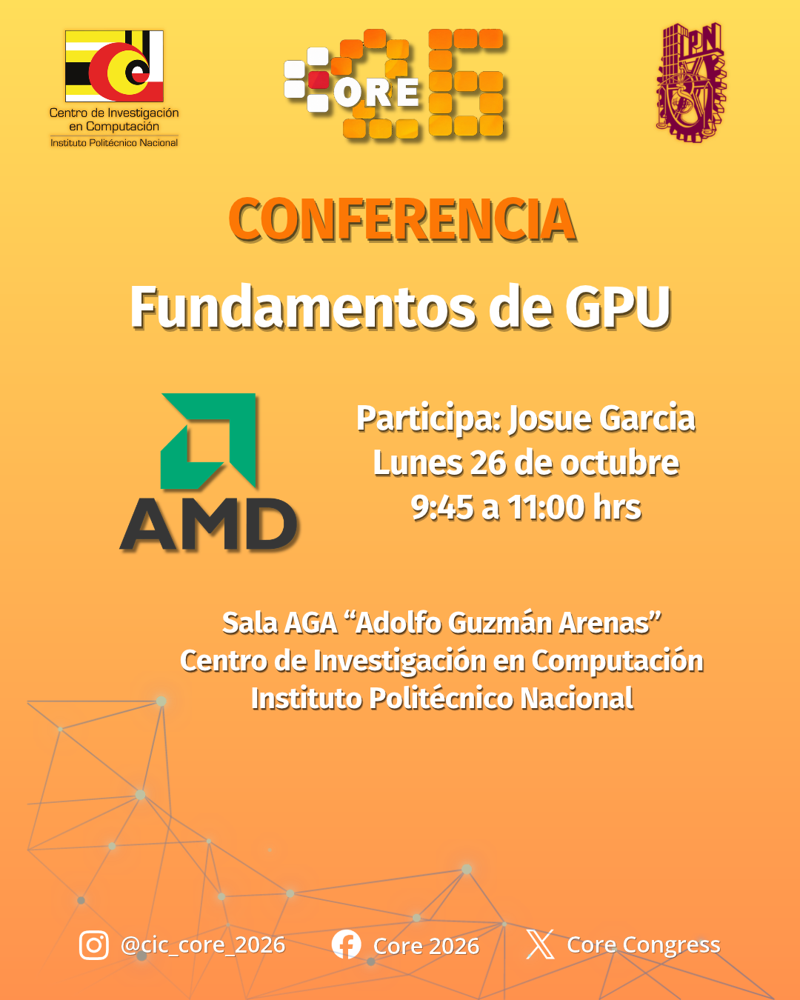
Sala AGA 'Adolfo Guzmán Arenas' - CIC IPNFundamentos de GPU
Participa: Josue García
Exposición de Papers 1 al 5
Participa: Investigadores CORE
Exposición de Papers 24 y 25
Participa: Investigadores CORE
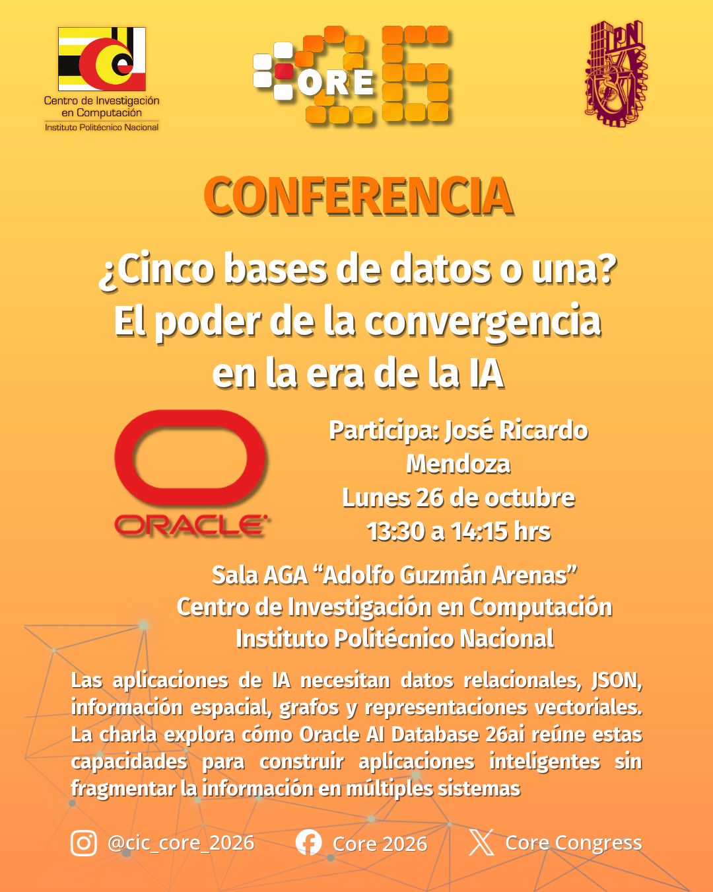
Sala AGA 'Adolfo Guzmán Arenas' - CIC IPNConferencia ORACLE
Participa: ORACLE
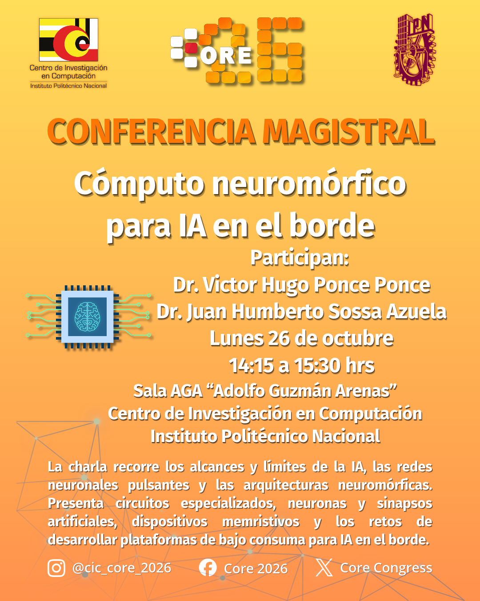
Sala AGA 'Adolfo Guzmán Arenas' - CIC IPNCómputo neuromórfico para IA en el borde
Participa: Dr. Victor Hugo Ponce Ponce, Dr. Juan Humberto Sossa Azuela
Exposición de Paper 26
Participa: Investigador CORE
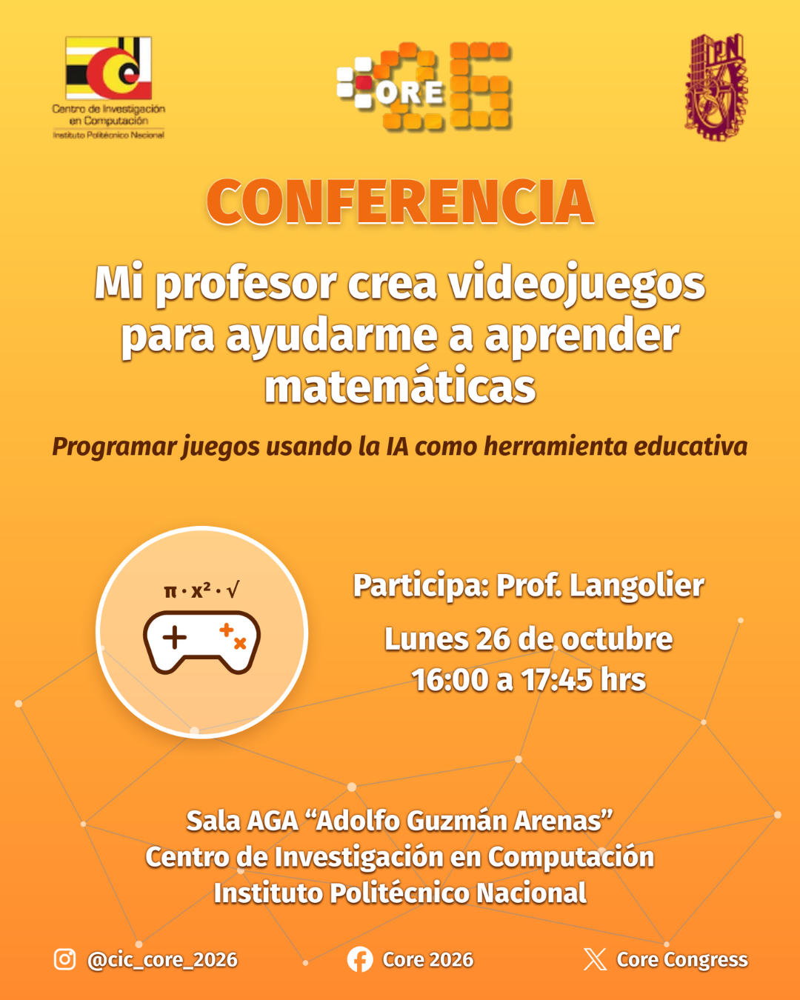
Sala AGA 'Adolfo Guzmán Arenas' - CIC IPNMi profesor crea videojuegos para aprender matemáticas
Participa: Profe. Langolier
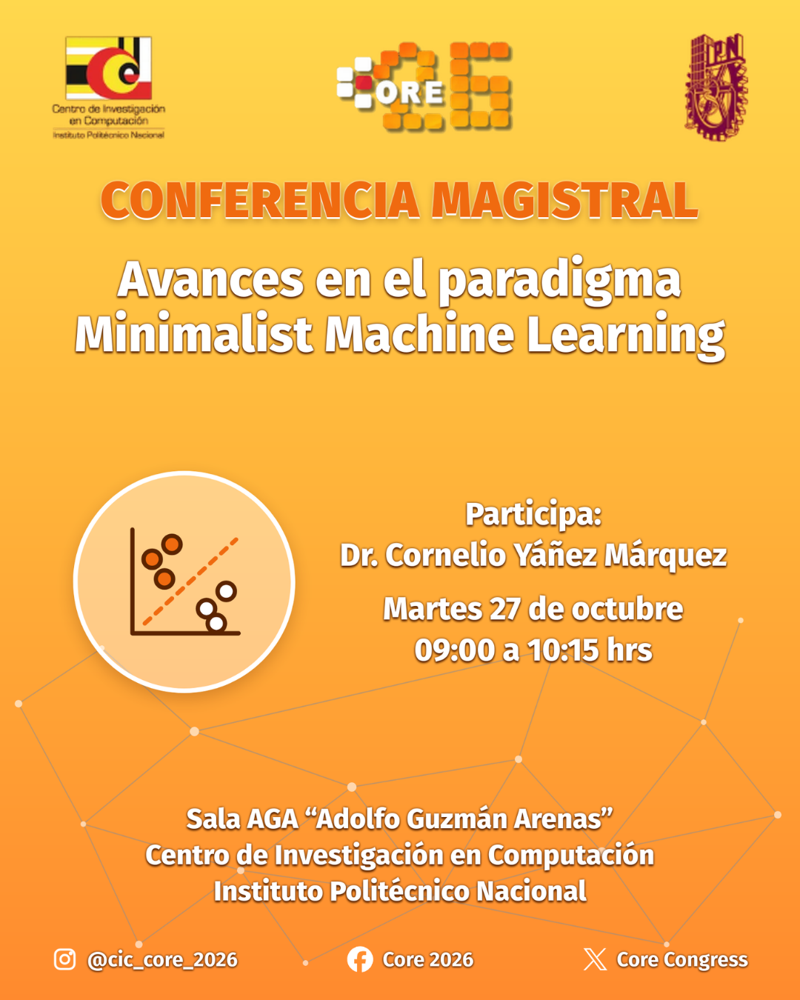
Sala AGA 'Adolfo Guzmán Arenas' - CIC IPNAvances en el paradigma Minimalist Machine Learning
Participa: Dr. Cornelio Yáñez Márquez
Exposición de Papers 6 al 11
Participa: Investigadores CORE
El corazón en tus manos
Participa: Ponente Invitado
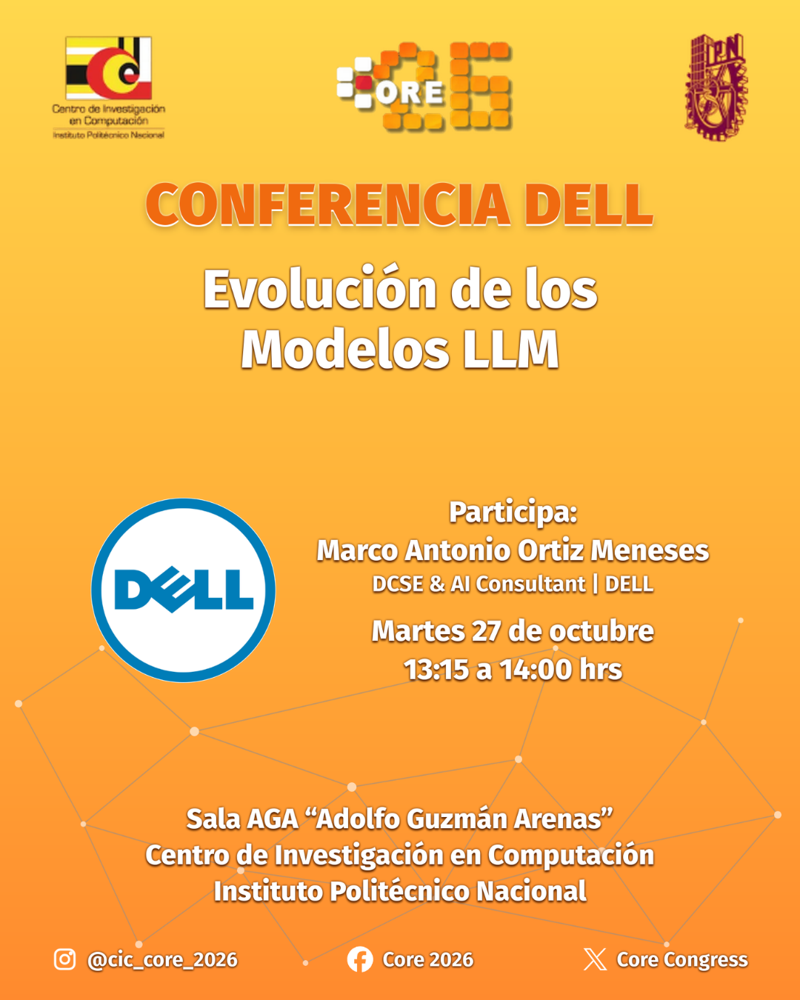
Sala AGA 'Adolfo Guzmán Arenas' - CIC IPNEvolución de los Modelos LLM
Participa: Marco Antonio Ortiz Meneses
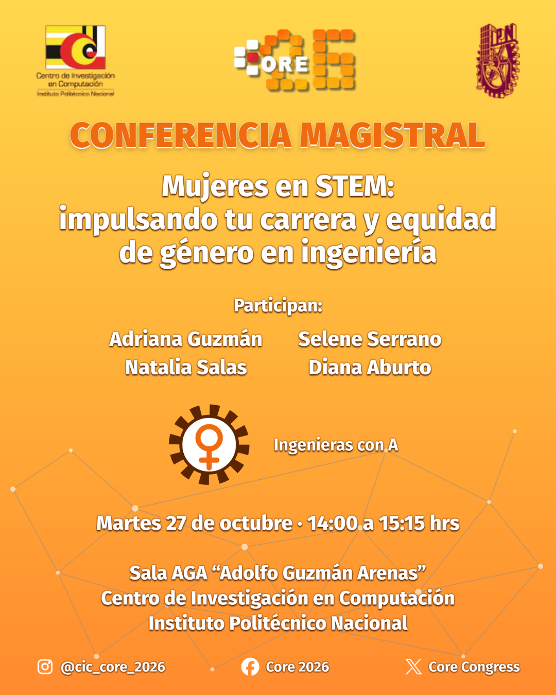
Sala AGA 'Adolfo Guzmán Arenas' - CIC IPNMujeres en STEM: impulsando tu carrera y equidad de género en ingeniería
Participa: Adriana Guzmán, Selene Serrano, Natalia Salas, Diana Aburto
Exposición de Paper 27
Participa: Investigador CORE
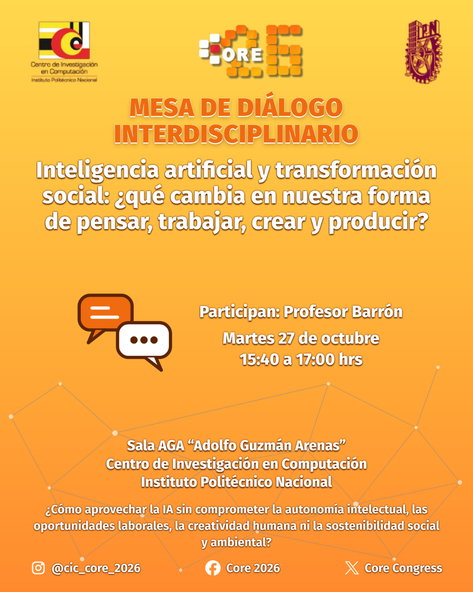
Sala AGA 'Adolfo Guzmán Arenas' - CIC IPNInteligencia artificial y transformación social: ¿qué cambia en nuestra forma de pensar, trabajar, crear y producir?
Participa: Profesor Barrón
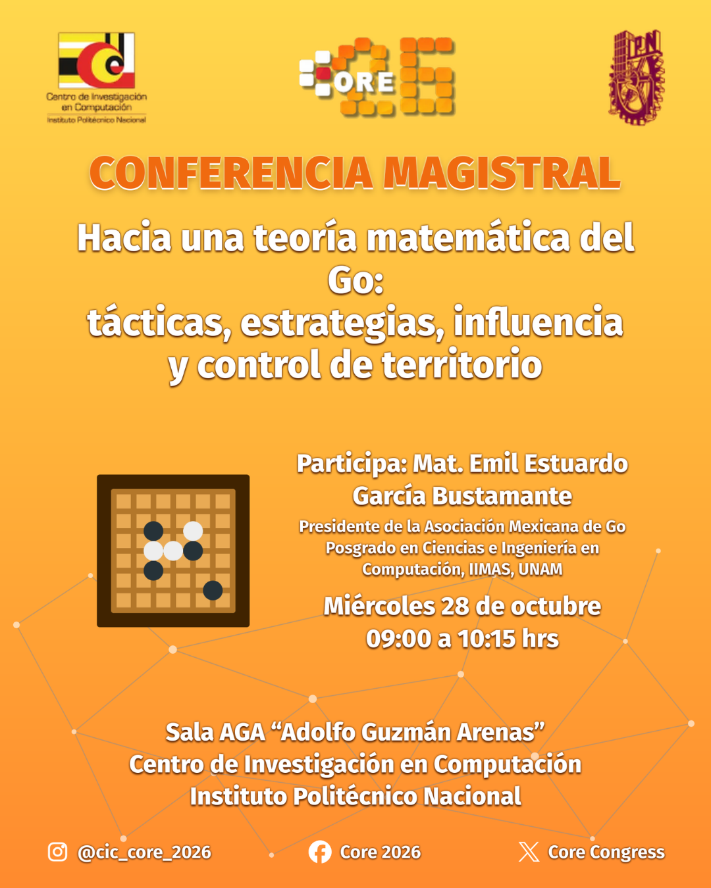
Sala AGA 'Adolfo Guzmán Arenas' - CIC IPNHacia una teoría matemática del Go: tácticas, estrategás, influencia y control de territorio
Participa: Emilio Bustamante
Exposición de Papers 12 al 17
Participa: Investigadores CORE
Presentación de Cantante
Participa: Artista Invitado
Exposición de Papers 28 y 29
Participa: Investigadores CORE
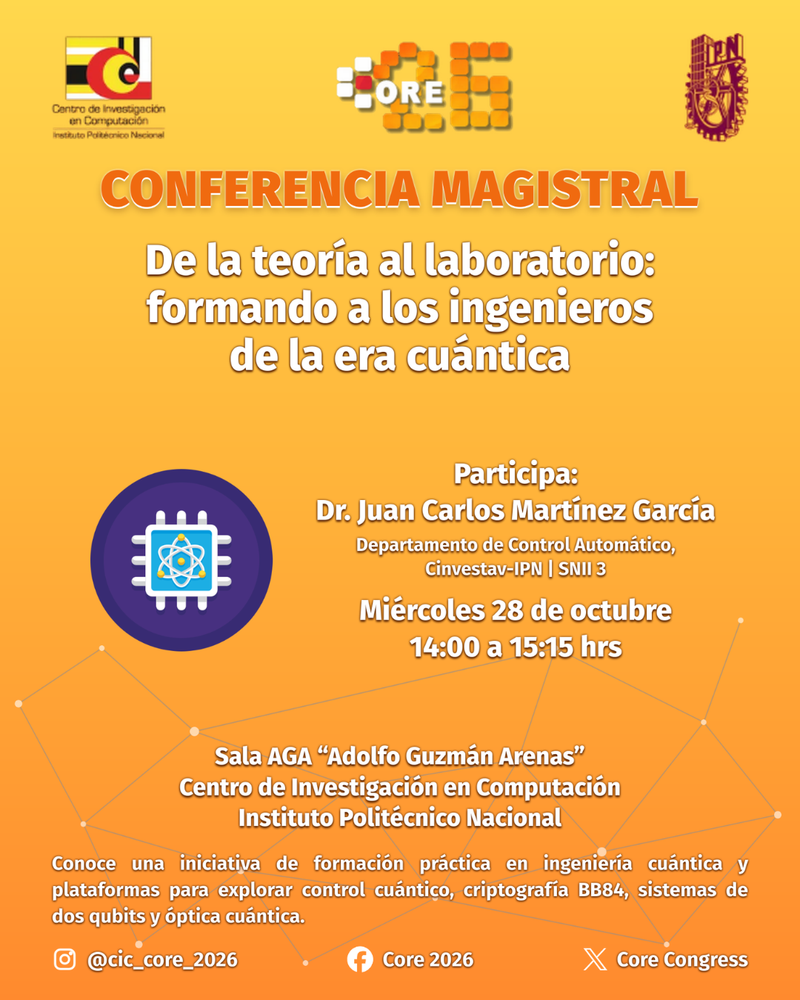
Sala AGA 'Adolfo Guzmán Arenas' - CIC IPNDe la teoría al laboratorio: formando a los ingenieros de la era cuántica
Participa: Dr. Juan Carlos Martínez García
Exposición de Paper 30
Participa: Investigador CORE
IEEE - Concurso de disfraces
Participa: Rama IEEE CIC
Conferencia Profesor Amadeo
Participa: Prof. Amadeo
Exposición de Papers 18 al 23
Participa: Investigadores CORE
OPENLAB / Coffee Break
Participa: Laboratorios CIC
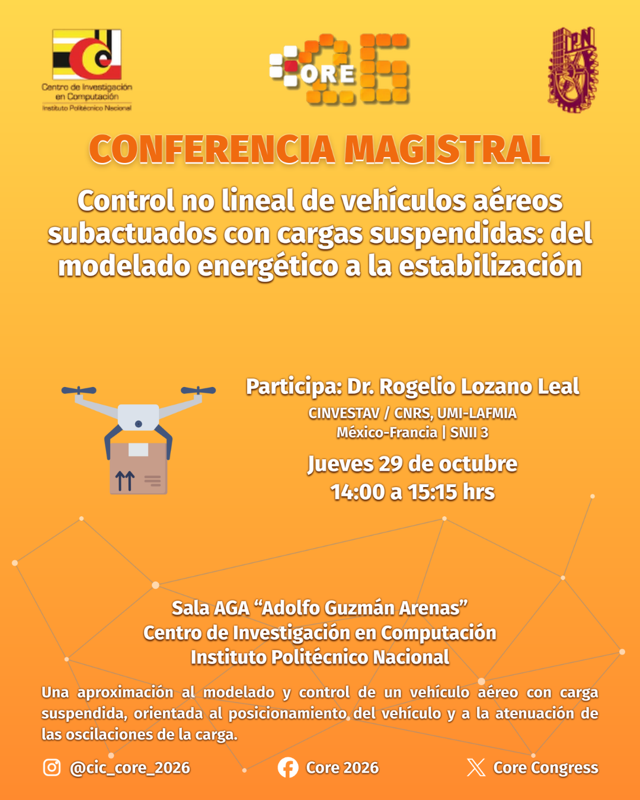
Sala AGA 'Adolfo Guzmán Arenas' - CIC IPNControl no lineal de vehículos aéreos subactuados con cargas suspendidas: del modelado energético a la estabilización
Participa: Dr. Rogelio Lozano Leal
AInfluencer
Participa: Ponente Invitado
Claudia Suleima — Clausura
Participa: Claudia Suleima / Comité